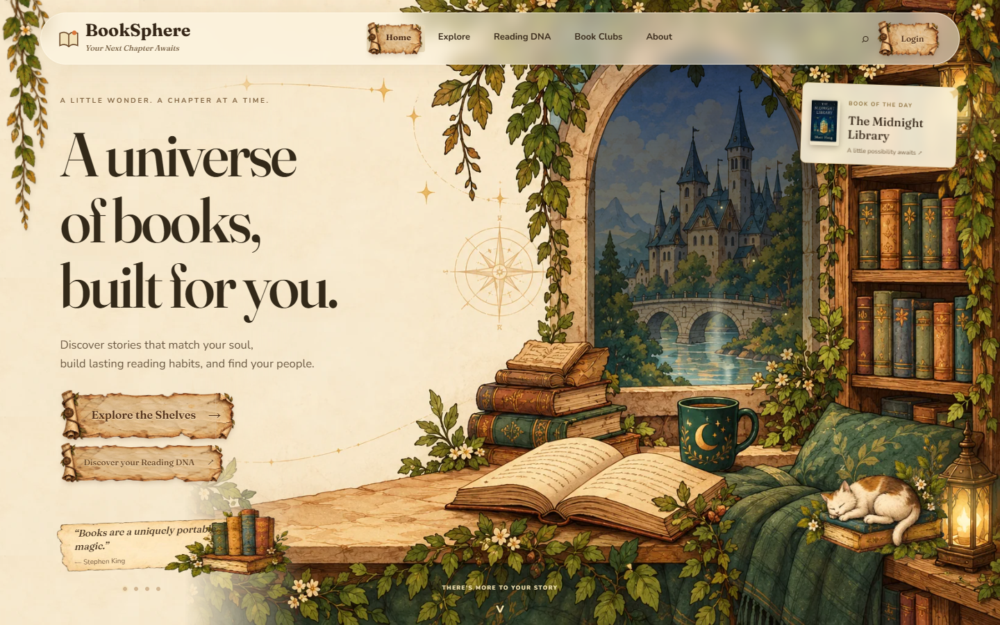
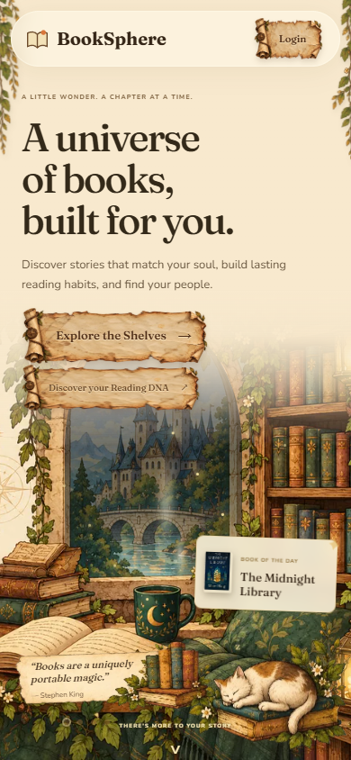
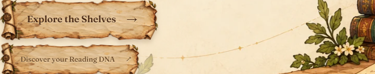
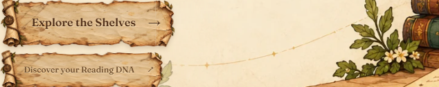

A little parchment magic.
The buttons use your Weathered Treasure Map Scroll Frame painting. Hover or tab onto one to unfurl it, move away to settle it back, and click to see it roll shut and open again. These preview buttons stay on this page so you can repeat the animation.
Try a hover, keyboard focus, or tap.
Open the actual landing page · Implementation and verification
In the landing page




Open and resting states

